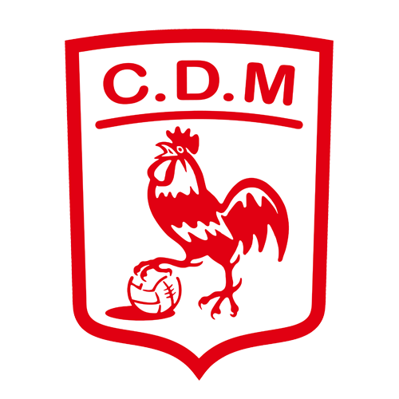
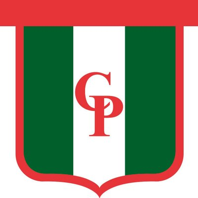
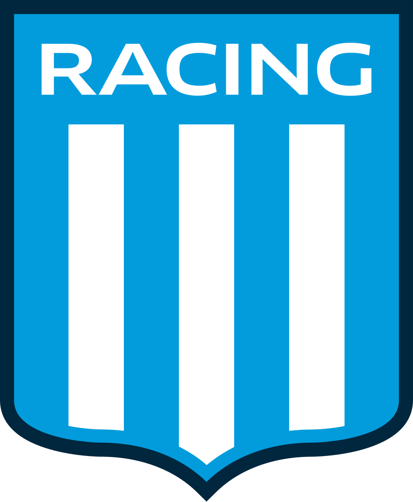
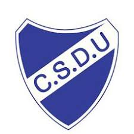
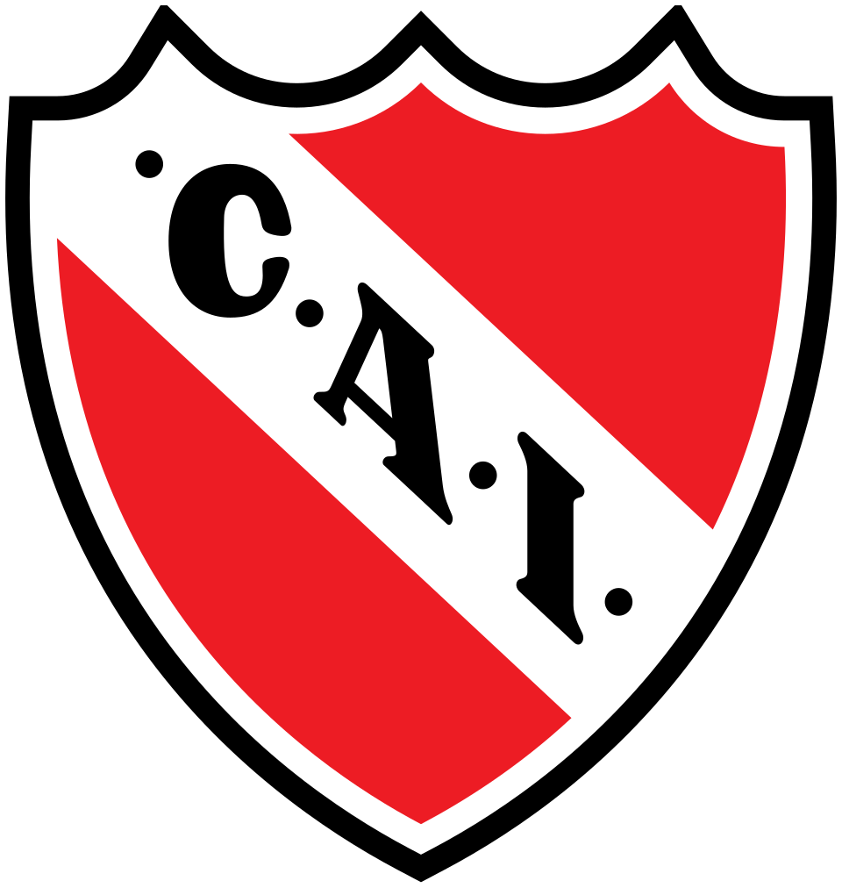
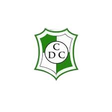
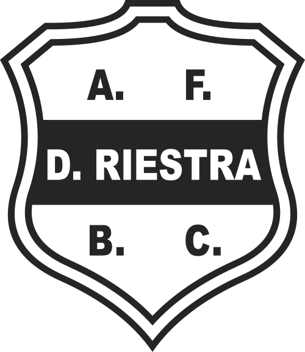

Identidad
Ataque vertical y defensa agresiva. Sistema 3/1 o 4-0 con falso pivot. Amplitud y profundidad en ataque. Adelantamiento de arquero y superioridades. Búsqueda constante de duelos y 1vs1. Compromiso, respeto, empatía y lealtad.
Metodología de trabajo
Planificación estructurada de entrenamientos, análisis del juego, desarrollo individual del jugador y adaptación constante al contexto competitivo del equipo.
Objetivos como entrenador
Potenciar el rendimiento colectivo, desarrollar jugadores inteligentes, competitivos y comprometidos, y construir equipos con identidad clara dentro y fuera de la cancha.
Valores
Respeto, compromiso, empatía, disciplina, sentido de pertenencia y responsabilidad profesional en cada proceso.
Trayectoria como entrenador
-
2013–2015

Deportivo Morón
Entrenador
- Campeón reserva (2013)
-
2016

Social Parque
Entrenador
-
2017

Barracas Central
Entrenador
- Campeón Supercopa (2017)
-
2017

Club Alvear
Entrenador
-
2018

Racing Club
Entrenador
- Campeón y ascenso (2018)
-
2019

Unión Ezpeleta
Entrenador
-
2020–2021

Independiente
Entrenador
- Ascenso (2020)
-
2022

Hebraica
Entrenador
-
2023

Banfield
Entrenador
-
2024–2025

Franja de Oro
Entrenador
- Campeón Copa Argentina (2024)
Trayectoria como jugador
-
2004–2010

Argentinos Juniors
Jugador
-
2010–2011

Defensores de Cervantes
Jugador
-
2012

Deportivo Riestra
Jugador
-
2013
Deportivo Morón
Jugador